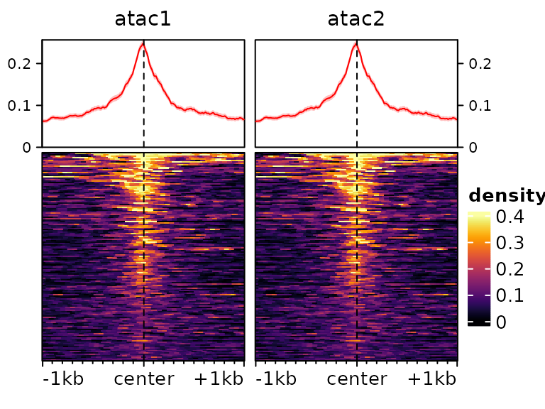
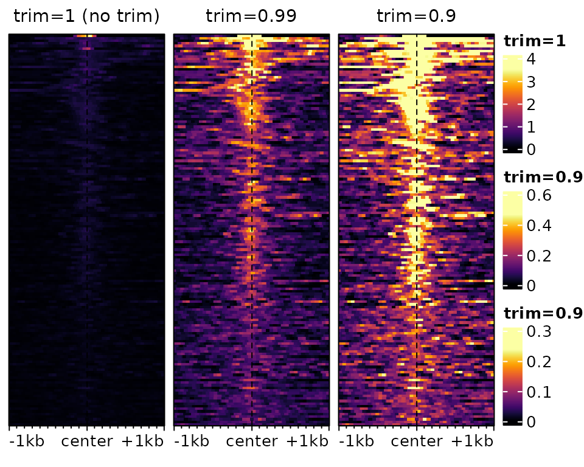
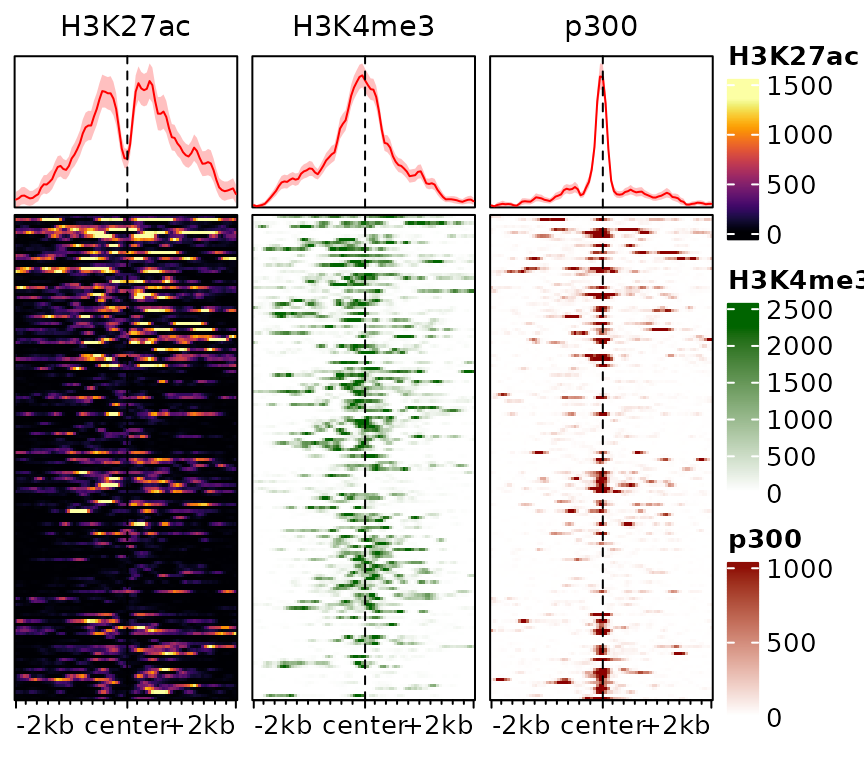
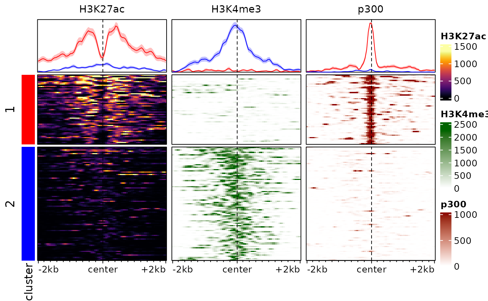

Visualizing signals across many regions
Pierre-Luc Germain
Lab of Statistical Bioinformatics, University of Zürich;D-HEST Institute for Neuroscience, ETH Zürich, SwitzerlandmultiRegionPlot.RmdAbstract
This vignette covers the functions necessary for plotting signal across multiple regions. This involves acquiring positional information in/around given regions across tracks, functions to manipulate and aggregate these matrices, as well as functions to plot signal heatmaps from them.
Introduction
Since reading data from many regions is typically longer than plotting it, we split plotting and acquiring the data. The latter is done through function specific to this package, while the former wraps around the EnrichedHeatmap package. The interface here has been simplified, but for full functionality and customization it is recommended to have a look at the EnrichedHeatmap documentation.
Reading signal in/around a set of regions
The signal2Matrix function reads genomic signals around
the centers of a set of regions. It can read from bam and BigWig files,
although reading from bam files is considerably slower and we strongly
recommend using bigwig files. For generating bigwig files that show the
kind of signal you want to visualize, see the
vignette to this effect.
suppressPackageStartupMessages(library(epiwraps))
# we fetch the path to the example bigwig file:
bwf <- system.file("extdata/example_atac.bw", package="epiwraps")
# we load example regions (could be a GRanges or a path to a bed-like file):
regions <- system.file("extdata/example_peaks.bed", package="epiwraps")
# we obtain the matrix of the signal around the regions. For the purpose of this
# example, we'll read twice from the same:
m <- signal2Matrix(c(atac1=bwf, atac2=bwf), regions, extend=1000L)## Reading /home/runner/work/_temp/Library/epiwraps/extdata/example_atac.bw
## Reading /home/runner/work/_temp/Library/epiwraps/extdata/example_atac.bw
m## class: EnrichmentSE
## 2 tracks across 150 regions
## assays(1): input
## rownames(150): 1:195054101-195054250 1:133522798-133523047 ...
## 1:22224734-22224983 1:90375438-90375787
## rowData names(0):
## colnames(2): atac1 atac2
## colData names(0):
## metadata(0):The result is an object of class EnrichmentSE, which
inherits from a SummarizedExperiment,
and therefore affords all the manipulations that the latter offers. Each
region is stored as a row, and each sample or signal track as a column
of the object. So we can see that we have signal for 150 rows/regions
from two tracks.
We could subset to the first 50 regions as follows:
m[1:50,]## class: EnrichmentSE
## 2 tracks across 50 regions
## assays(1): input
## rownames(50): 1:195054101-195054250 1:133522798-133523047 ...
## 1:16142722-16143021 1:143652894-143653043
## rowData names(0):
## colnames(2): atac1 atac2
## colData names(0):
## metadata(0):or obtain the coordinates of the queried regions :
rowRanges(m)## GRanges object with 150 ranges and 0 metadata columns:
## seqnames ranges strand
## <Rle> <IRanges> <Rle>
## 1:195054101-195054250 1 195054101-195054250 *
## 1:133522798-133523047 1 133522798-133523047 *
## 1:133522621-133522870 1 133522621-133522870 *
## 1:170892151-170892250 1 170892151-170892250 *
## 1:170897239-170897438 1 170897239-170897438 *
## ... ... ... ...
## 1:121131630-121131729 1 121131630-121131729 *
## 1:122700285-122700334 1 122700285-122700334 *
## 1:100107921-100108020 1 100107921-100108020 *
## 1:22224734-22224983 1 22224734-22224983 *
## 1:90375438-90375787 1 90375438-90375787 *
## -------
## seqinfo: 1 sequence from an unspecified genome; no seqlengthsOne can further obtain more detailed information about the bins saved in the object:
## atac1 ( 150x200 ) :
## -1kb/+1kb (100 windows each)
## around the centers of given regions
## atac2 ( 150x200 ) :
## -1kb/+1kb (100 windows each)
## around the centers of given regionsThis means that each signal track is a matrix of 200 columns, because we asked to extend 1000bp on either side, and the default bin size is 10bp, making 100 bins/windows on each side.
Extracting and manipulating signal matrices
It is possible to extract the list of signal matrix for manipulations, e.g. for transformation:
# square-root transform
m2 <- lapply(getSignalMatrices(m), sqrt)See ?addAssayToESE for adding a list of signal matrices
(such as m2 here) to an existing EnrichmentSE
object. In addition, signal matrices can be combined, either manually or
using ?mergeSignalMatrices.
Normalization
By default, bigwig files generated by epiwraps are
normalized for library size, but this is not always sufficient.
EnrichmentSE can further be normalized using various
methods. For an overview of these methods, see the
normalization vignette.
Plotting heatmaps
Once the signal has been read and the object prepared, (and eventually normalized, see the section below), we can plot heatmaps based on them as follows:
 We can use most arguments that are supported by EnrichedHeatmap (and thus, by extension, by ComplexHeatmap), for example:
plotEnrichedHeatmaps(m, colors=c("white","darkred"), cluster_rows=TRUE,
show_row_dend=TRUE, top_annotation=FALSE,
row_title="My list of cool regions")
It is often useful to subset to regions with a high enrichment, which
we can do with the score function:
plotEnrichedHeatmaps(m[head(order(-rowMeans(score(m))),50),])Color-scale trimming
By default, the colorscale is trimmed to prevent most of it being
driven by rare extreme values. This can be controlled via the
trim argument (which indicates up to which quantile of data
points to keep to establish the colorscale). Compare for instance the
following two heatmaps:
plotEnrichedHeatmaps(m[,1], trim=1, scale_title="trim=1", column_title="trim=1 (no trim)",
top_annotation=FALSE) +
plotEnrichedHeatmaps(m[,1], trim=0.99, scale_title="trim=0.99",
column_title="trim=0.99", top_annotation=FALSE) +
plotEnrichedHeatmaps(m[,1], trim=0.9, column_title="trim=0.9",
scale_title="trim=0.9", top_annotation=FALSE)
The underlying data is exactly the same, only the color-mapping
changes. In the left one, which has no trimming, a single very high
value at the top forces the colorscale to extend to high values, even
though most of the data is in the very low range, resulting in a very
dark heatmap. In the one on the right, it’s the opposite: so much is
trimmed that many points reach the top of the colorscale, resulting in a
an ‘over-exposed’ heatmap. In practice, it is advisable to use minimal
trimming (e.g. the default is c(0.02,0.98)).
Different colorscales for different tracks
It is also possible to have different colorscales for different tracks, which is especially useful when comparing very different signals. To illustrate this, let’s load an example with different tracks:
data(exampleESE)
exampleESE## class: EnrichmentSE
## 3 tracks across 150 regions
## assays(1): input
## rownames(150): chr1:36986026-36986320 chr1:36986855-36987064 ...
## chr1:135509406-135510907 chr1:131525035-131527379
## rowData names(0):
## colnames(3): H3K27ac H3K4me3 p300
## colData names(0):
## metadata(0):We can put each of the three tracks on its own color scale:
plotEnrichedHeatmaps(exampleESE, multiScale=TRUE)One could also specify colors separately by providing them as a list:
plotEnrichedHeatmaps(exampleESE,
colors=list(c("white","darkblue"), "darkgreen", "darkred"))This information can also be stored in the object, rather than specified everytime:
exampleESE$hmcolors <- list(viridisLite::inferno(100), "darkgreen", "darkred")
plotEnrichedHeatmaps(exampleESE)
Scaled regions
By default, signal2Matrix looks at a pre-defined
interval (defined by the extend argument) around the center
of the provided regions. This means that the width of the input regions
is ignored. In some circumstances, however, it can be useful to scale
regions to the same width, which can be done using the
type="scaled" argument. Consider the following example:
ese <- cbind(
signal2Matrix(c(center=bwf), regions, extend=1000L),
signal2Matrix(c(scaled=bwf), regions, extend=1000L, type="scaled")
)## Reading /home/runner/work/_temp/Library/epiwraps/extdata/example_atac.bw
## Reading /home/runner/work/_temp/Library/epiwraps/extdata/example_atac.bw
plotEnrichedHeatmaps(ese)
For some purposes, such as when plotting signal over transcripts, it
can be useful for the target region to consist of multiple regions
(e.g. exons) stitched together. This can be done by supplying a
GRangesList as regions:
# we make a dummy GRangesList:
a <- sort(rtracklayer::import(regions))
dummy.grl <- GRangesList(split(a, rep(LETTERS[1:15],each=10)))
sm <- signal2Matrix(c(scaled=bwf), dummy.grl, extend=1000L, type="scaled")## Reading /home/runner/work/_temp/Library/epiwraps/extdata/example_atac.bwHeatmap rasterization
When plotting more regions that there are pixels available, several regions have to be summarized in one pixel, and doing this before generating the heatmap makes the plot much less heavy.
By default, EnrichedHeatmap performs rasterization using
the magick package when it is installed, and falls back to
a very suboptimal method when not. It is therefore recommended to
install the magick package.
Depending on your settings, if the heatmap is very big you
might hit the preset limits of ‘magick’ base rasterization, which could
result in an error such as ‘Image must have at least 1 frame to write a
bitmap’. In such cases, you might have to degrade to a lower-quality
rasterization using the additional arguments
raster_by_magick=FALSE, raster_device="CairoJPEG".
Finally, on some systems, the rasterization sometimes encounters an
‘UnableToOpenBlob’ error. At the moment, the only workaround this has
been to disable rasterization using use_raster=FALSE.
Sorting and clustering
The traditional ranking by decreasing overall enrichment can easily hide patterns in the data, which are instead revealed by clustering. One approach is to use hierarchical clustering of the rows:
plotEnrichedHeatmaps(exampleESE, cluster_rows=TRUE)In this example, this already reveals important patterns in the data, namely the fact that p300 binding is associated with H3K27ac and tends to be mutually exclusive with the promoter-associated H3K4me3 mark.
The hierarchical clustering is based on the whole enrichment profile, can easily be led astray by patterns in individual signals, and seldom provides good results in practice. An alternative is to use enrichment score weighted by distance to the center, eventually row-normalized, to cluster the regions. We provide a function to this end:
# we cluster the regions using 2 clusters, and store the cluster labels in the
# rowData of the object:
rowData(exampleESE)$cluster <- clusterSignalMatrices(exampleESE, k=2, scaleRows=TRUE)## ~95% of the variance explained by clusters
# we additionally label the clusters with colors:
plotEnrichedHeatmaps(exampleESE, row_split="cluster",
mean_color=c("1"="red", "2"="blue"))
Note that here we are splitting into 3 clusters, you can also provide
a range of values (e.g. k=2:8) and the function will also
return cluster quality metrics for each.
Users can of course use their own algorithms to cluster regions. To
this end, it can be useful to summarize each region in each sample using
a single score which weights the signal according to the distance to the
center of the target (see
?EnrichedHeatmap::enriched_score). This can be done for the
default assay with the score method:
## H3K27ac H3K4me3 p300
## chr1:36986026-36986320 39609.53 341.850 27443.12
## chr1:36986855-36987064 48642.90 230.900 21184.08
## chr1:36061123-36061559 26838.05 313.025 20699.60
## chr1:36060725-36060951 34205.22 330.125 20061.05
## chr1:180888607-180889217 20013.45 2019.725 22293.35
## chr1:86487735-86488859 20008.00 26012.825 1265.85Plotting aggregated signals
It is also possible to plot only the average signals across regions.
To do this, we first melt the signal matrices and then use ggplot2. The
meltSignals function will return a data.frame showing the
mean, standard deviation, standard error and median at each position
relative to the center, for each sample/matrix:
d <- meltSignals(exampleESE)
head(d)## position sample mean SD SE median
## 1 -2000 H3K27ac 83.28000 182.5112 14.90197 11.5
## 2 -1950 H3K27ac 85.87333 189.9628 15.51040 11.5
## 3 -1900 H3K27ac 91.19333 207.2911 16.92525 9.0
## 4 -1850 H3K27ac 90.92000 201.2272 16.43013 8.5
## 5 -1800 H3K27ac 88.02667 192.6586 15.73051 10.0
## 6 -1750 H3K27ac 85.52000 173.5301 14.16867 14.5This can then be used for plotting, simply with
ggplot:
library(ggplot2)
ggplot(d, aes(position, mean, colour=sample)) +
geom_vline(xintercept=0, linetype="dashed") +
geom_ribbon(aes(position, ymin=mean-SE, ymax=mean+SE, fill=sample), alpha=0.4, colour=NA) +
geom_line(linewidth=1.2) +
theme_bw() + labs(x="relative position", y="mean RPKM")
We could also include cluster information:
d <- meltSignals(exampleESE, splitBy = "cluster")
ggplot(d, aes(position, mean, colour=sample)) +
geom_vline(xintercept=0, linetype="dashed") +
geom_ribbon(aes(position, ymin=mean-SE, ymax=mean+SE, fill=sample), alpha=0.4, colour=NA) +
geom_line(linewidth=1.2) + facet_wrap(~split) +
theme_bw() + labs(x="relative position", y="mean RPKM")Visualizing DNAme and sparse signals
Nucleotide-resolution DNA methylation (as obtained from bisulfite sequencing) signal differs from the signals used throughout this vignette in that it is not continuous across the genome, but specifically at C or CpG nucleotides which have a variable density throughout the genome. As a consequence, it is likely that some of the plotting bins do not contain a CpG, in which case they get assigned a value of 0, even though they could be in a completely methylated region. For this reason, it is advisable to smooth DNA methylation signals for the purpose of visualization.
As an example, let’s look at the gene bodies of some active genes from chr8 of the A549 cell lines:
## UnstitchedGPos object with 6 positions and 1 metadata column:
## seqnames pos strand | score
## <Rle> <integer> <Rle> | <integer>
## [1] chr9 4791172 + | 96
## [2] chr9 4791391 + | 96
## [3] chr9 4791398 + | 100
## [4] chr9 4791422 + | 92
## [5] chr9 4791437 + | 82
## [6] chr9 4791627 + | 93
## -------
## seqinfo: 5 sequences from an unspecified genome; no seqlengthsAs is typical of DNAme data, the object is a GRanges object (or more
specifically a GPos object, since all ranges have a width of 1
nucleotide) with, in the score column, the percentage of DNA
methylation. Let’s see what happens if we plot a heatmap of this signal,
with and without smoothing (we use type="scaled" to scale
the gene bodies to the same size, since these can have very different
sizes) :
o1 <- signal2Matrix(list(noSmooth=exampleDNAme), geneBodies, type="scaled")## Computing signal from GRanges 'noSmooth'...
o2 <- signal2Matrix(list(smoothed=exampleDNAme), geneBodies, type="scaled",
smooth=TRUE)## Computing signal from GRanges 'smoothed'...
o <- cbind(o1,o2)
plotEnrichedHeatmaps(o, scale_title="%\nmethylation", axis_name=c("TSS","TES"))Both heatmaps show a very clear absence of DNA methylation at the promoter of these genes (upstream of the TSS) an predominantly methylated gene bodies. However they disagree substantially on the methylation levels upstream the promoter and downstream the transcription end sites (TES). This is because of the density of these regions in (covered) CpG nucleotides. Since most genes are rather long, most of the bins in the heatmap contain a CpG, leading to an actual methylation signal. In the flanking regions, however, this is not necessarily the case, and the non-smoothed heatmap does not distinguish bins that are unmethylated form bins for which there is no information. Instead, the smoothed heatmap on the right uses neighborhing bins to estimate the methylation status of each bin, effectively filling out the gaps. In doing so it provides the truthful representation, i.e. that the regions downstream of the genes and upstream of the promoters are, most of the time, as methylated as the gene bodies.
Smoothing is performed by EnrichedHeatmap;
see ?EnrichedHeatmap::normalizeToMatrix for more
information/customization.
Session information
## R version 4.4.1 (2024-06-14)
## Platform: x86_64-pc-linux-gnu
## Running under: Ubuntu 22.04.4 LTS
##
## Matrix products: default
## BLAS: /usr/lib/x86_64-linux-gnu/openblas-pthread/libblas.so.3
## LAPACK: /usr/lib/x86_64-linux-gnu/openblas-pthread/libopenblasp-r0.3.20.so; LAPACK version 3.10.0
##
## locale:
## [1] LC_CTYPE=C.UTF-8 LC_NUMERIC=C LC_TIME=C.UTF-8
## [4] LC_COLLATE=C.UTF-8 LC_MONETARY=C.UTF-8 LC_MESSAGES=C.UTF-8
## [7] LC_PAPER=C.UTF-8 LC_NAME=C LC_ADDRESS=C
## [10] LC_TELEPHONE=C LC_MEASUREMENT=C.UTF-8 LC_IDENTIFICATION=C
##
## time zone: UTC
## tzcode source: system (glibc)
##
## attached base packages:
## [1] grid stats4 stats graphics grDevices utils datasets
## [8] methods base
##
## other attached packages:
## [1] ggplot2_3.5.1 epiwraps_0.99.95
## [3] EnrichedHeatmap_1.34.0 ComplexHeatmap_2.20.0
## [5] SummarizedExperiment_1.34.0 Biobase_2.64.0
## [7] GenomicRanges_1.56.1 GenomeInfoDb_1.40.1
## [9] IRanges_2.38.0 S4Vectors_0.42.0
## [11] BiocGenerics_0.50.0 MatrixGenerics_1.16.0
## [13] matrixStats_1.3.0 BiocStyle_2.32.1
##
## loaded via a namespace (and not attached):
## [1] RColorBrewer_1.1-3 rstudioapi_0.16.0 jsonlite_1.8.8
## [4] shape_1.4.6.1 magrittr_2.0.3 magick_2.8.3
## [7] GenomicFeatures_1.56.0 farver_2.1.2 rmarkdown_2.27
## [10] GlobalOptions_0.1.2 fs_1.6.4 BiocIO_1.14.0
## [13] zlibbioc_1.50.0 ragg_1.3.2 vctrs_0.6.5
## [16] memoise_2.0.1 Rsamtools_2.20.0 RCurl_1.98-1.14
## [19] base64enc_0.1-3 htmltools_0.5.8.1 S4Arrays_1.4.1
## [22] progress_1.2.3 curl_5.2.1 SparseArray_1.4.8
## [25] Formula_1.2-5 sass_0.4.9 bslib_0.7.0
## [28] htmlwidgets_1.6.4 desc_1.4.3 plyr_1.8.9
## [31] Gviz_1.48.0 httr2_1.0.1 cachem_1.1.0
## [34] GenomicAlignments_1.40.0 lifecycle_1.0.4 iterators_1.0.14
## [37] pkgconfig_2.0.3 Matrix_1.7-0 R6_2.5.1
## [40] fastmap_1.2.0 GenomeInfoDbData_1.2.12 clue_0.3-65
## [43] digest_0.6.36 colorspace_2.1-0 AnnotationDbi_1.66.0
## [46] textshaping_0.4.0 Hmisc_5.1-3 RSQLite_2.3.7
## [49] labeling_0.4.3 filelock_1.0.3 fansi_1.0.6
## [52] httr_1.4.7 abind_1.4-5 compiler_4.4.1
## [55] withr_3.0.0 bit64_4.0.5 doParallel_1.0.17
## [58] backports_1.5.0 htmlTable_2.4.2 BiocParallel_1.38.0
## [61] DBI_1.2.3 UpSetR_1.4.0 highr_0.11
## [64] biomaRt_2.60.1 rappdirs_0.3.3 DelayedArray_0.30.1
## [67] rjson_0.2.21 tools_4.4.1 foreign_0.8-86
## [70] nnet_7.3-19 glue_1.7.0 restfulr_0.0.15
## [73] checkmate_2.3.1 cluster_2.1.6 generics_0.1.3
## [76] gtable_0.3.5 BSgenome_1.72.0 ensembldb_2.28.0
## [79] data.table_1.15.4 hms_1.1.3 xml2_1.3.6
## [82] utf8_1.2.4 XVector_0.44.0 foreach_1.5.2
## [85] pillar_1.9.0 stringr_1.5.1 circlize_0.4.16
## [88] dplyr_1.1.4 BiocFileCache_2.12.0 lattice_0.22-6
## [91] deldir_2.0-4 rtracklayer_1.64.0 bit_4.0.5
## [94] biovizBase_1.52.0 tidyselect_1.2.1 locfit_1.5-9.10
## [97] pbapply_1.7-2 Biostrings_2.72.1 knitr_1.47
## [100] gridExtra_2.3 bookdown_0.40 ProtGenerics_1.36.0
## [103] xfun_0.45 stringi_1.8.4 UCSC.utils_1.0.0
## [106] lazyeval_0.2.2 yaml_2.3.8 evaluate_0.24.0
## [109] codetools_0.2-20 interp_1.1-6 GenomicFiles_1.40.0
## [112] tibble_3.2.1 BiocManager_1.30.23 cli_3.6.3
## [115] rpart_4.1.23 systemfonts_1.1.0 munsell_0.5.1
## [118] jquerylib_0.1.4 dichromat_2.0-0.1 Rcpp_1.0.12
## [121] dbplyr_2.5.0 png_0.1-8 XML_3.99-0.17
## [124] parallel_4.4.1 pkgdown_2.0.9 blob_1.2.4
## [127] prettyunits_1.2.0 jpeg_0.1-10 latticeExtra_0.6-30
## [130] AnnotationFilter_1.28.0 bitops_1.0-7 viridisLite_0.4.2
## [133] VariantAnnotation_1.50.0 scales_1.3.0 purrr_1.0.2
## [136] crayon_1.5.3 GetoptLong_1.0.5 rlang_1.1.4
## [139] cowplot_1.1.3 KEGGREST_1.44.1